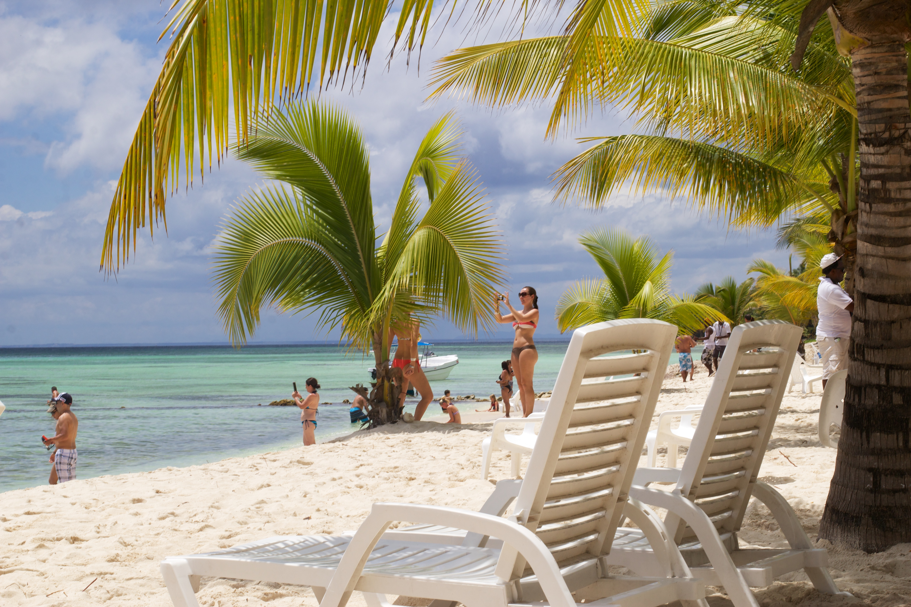
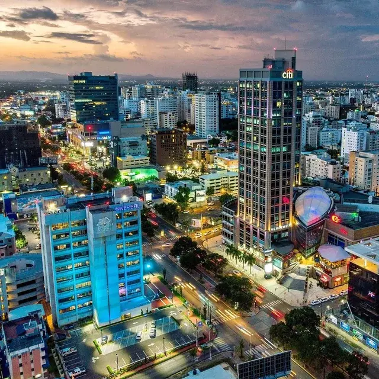
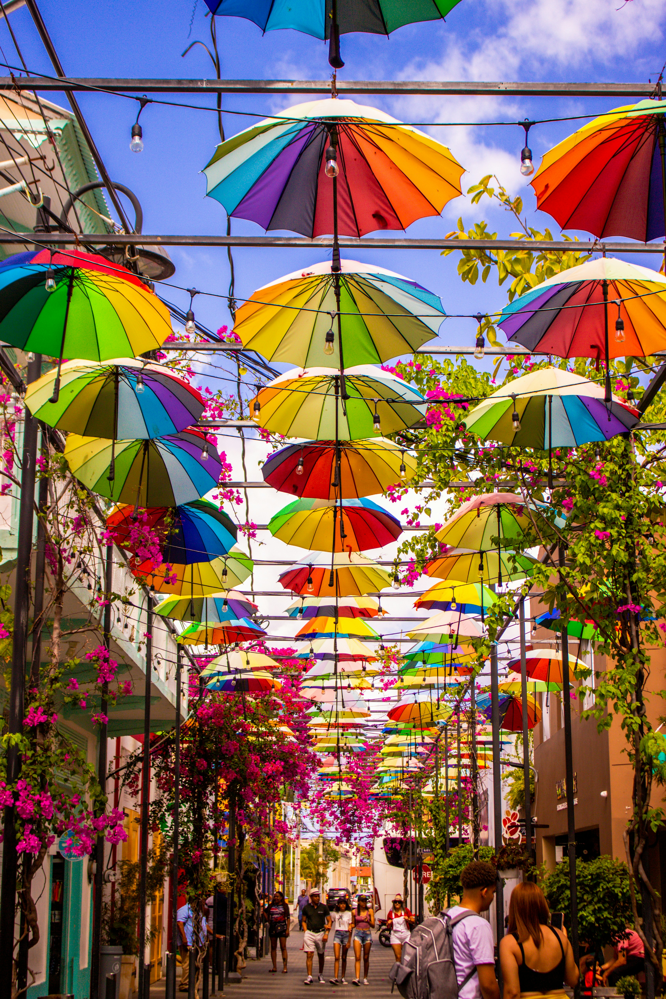

Punta Cana
Known for its stunning beaches and luxury resorts, Punta Cana is a must-visit destination in the Dominican Republic.
Discover beautiful places and travel destinations in the Dominican Republic.
From tropical beaches to historic cities and mountain landscapes, the Dominican Republic offers something for every traveler.

Known for its stunning beaches and luxury resorts, Punta Cana is a must-visit destination in the Dominican Republic.

The capital city of the Dominican Republic, Santo Domingo, is rich in history and culture, featuring colonial architecture and vibrant nightlife.

Puerto Plata is known for its beautiful beaches, cable car rides to Mount Isabel de Torres, and rich history, making it a unique destination in the Dominican Republic.